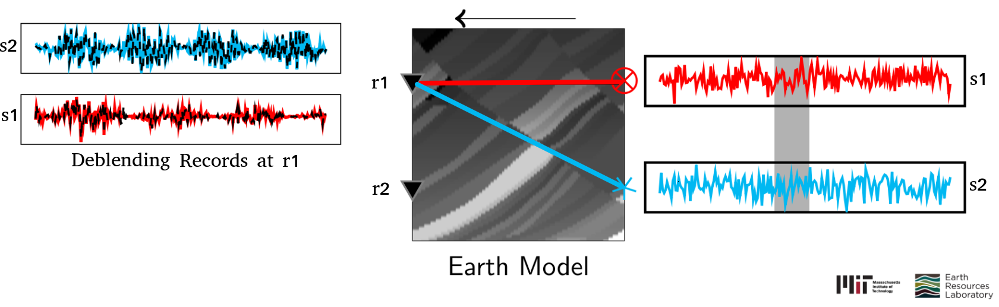
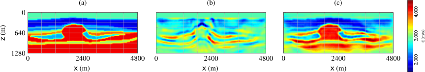
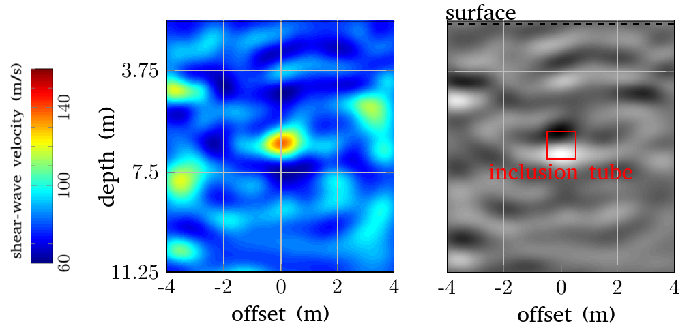

Focused Blind Deconvolution (FBD)
- This research introduces an idea (focusing) that is important to resolve the indeterminacy inherent to multichannel blind deconvolution. [paper] [slides]
- FBD is a deconvolution algorithm that extracts sparse and front-loaded impulse responses from the channel outputs, i.e., their convolutions with a single arbitrary source.
- This project also employs FBD to solve essential problems in both exploration and earthquake seismology. In this context, FBD not only outputs the subsurface Green's function, which can be directly input to imaging, but also helps us understand the noisy source characteristics.


Blind Source Separation/ Deblending
- This project demonstrates the application of frequency-domain independent component analysis to deblend random seismic sources. [slides] [paper]
- ICA uses higher-order statistics to measure the Gaussianity of signals and working with convolutive mixtures (as in seismic exploration) is a challenging problem.

Cycle Skipping in Full Waveform Inversion (FWI)
"When the seismic waveforms are too complicated to be analyzed during inversion, a simplification of them into envelope-like bumpy waveforms can be useful."
- This research formulates a bump functional that computes the data misfit in seismic inversion after a simplification. [slides] [paper]
- A multi-objective FWI strategy, where the bump functional is used as an auxiliary functional to overcome the well-known cycle-skipping problem, is proposed.
- Advantages of seismic inversion that maximizes the correlation between the observed and modelled seismic data. [slides]

Multi-parameter Seismic Inversion
An analysis of the multi-parameter inverse problem in quantitative seismic imaging. [slides] [paper]
Near-surface Shear-wave Imaging
The Earth’s properties, composition and structure ahead of a tunnel boring machine (TBM) should be mapped for hazard assessment during excavation. For mapping, a seismic system is deployed on the machine’s cutter head, with a few sources and sufficiently many sensors.
- This project studies the feasibility of using 2-D SH full waveform inversion to this near-surface imaging problem, where the images need to be available in near real time and without human interaction.
- The focus was on a system for soft soils, where shear waves are better and easier to interpret than compressional waves.
- This study uses data acquired in a number of field settings by a shear-wave vibrator source that mimic realistic TBM configurations.

Seismic Interferometry
-
My research in this direction introduces super-virtual interferometry, a method to enhance
the signal-to-noise ratio (SNR) of certain seismic phases (for example: head-wave refractions and diffractions), which follow a common subsurface ray path before being recorded at receivers. [paper] -
This method can not only enhance the SNR of the far-offset refracted seismic energy but also can detect the presence of diving waves in the first arrivals. [paper]
-
This research also demonstrates the application of this methodology to enhance the core-diffracted arrivals in the earthquake records. [slides]